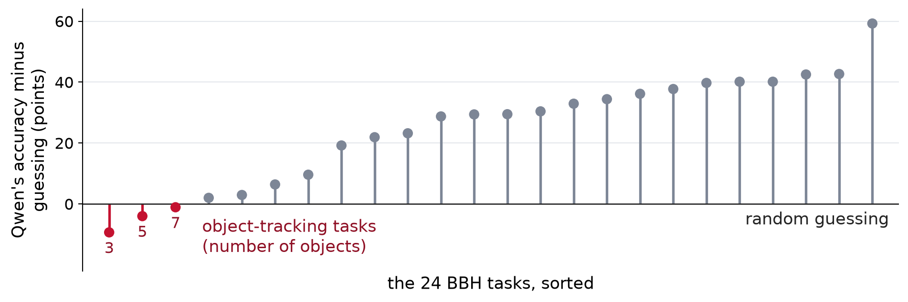

IMRaD, editing an AI draft, and the storyboard · Tue Apr 20
Today is about your own voice. In the oral presentation you defend your argument without help, so today you write it yourselves.
Please close AI tools for today. The only AI text you will see is on my screen.
Milestone 3 is due tonight. What it contains is in the Project Description, and how it is graded is in the Project Rubric. These slides add no requirements.
On paper, alone, without AI. A few sentences for each part. Eight minutes.
Then read your Results to your neighbor.
I gave Gemini the same four questions in a lazy prompt, the kind that takes a minute:
summarize my statistical evaluation of AI class as an imrad. intro: did it teach me useful skills to evaluate AI and use AI tools safely and effectively? what would i tell an employer or grad school? methods: what stats techniques did i learn, what AI tools did i examine, how did i know i learned something? results: what did i learn, with a concrete example. discussion: was it effective, what were the limitations, what would be better next time?
Its answer is on the next six slides, word for word. As we read, ask what is true about our course, what is made up, and what only you could have written.
Abstract Evaluation: Statistical and Applied Proficiency in Artificial Intelligence Education
Introduction
As artificial intelligence permeates professional and academic spheres, the ability to critically evaluate model outputs and deploy tools securely is paramount. This evaluation examines whether the AI course successfully equipped the student with rigorous skills to assess AI performance, recognize failure modes, and utilize AI technologies safely and effectively.
Gemini 3.5 Flash-Lite, signed out, Nov 17, 2026. Copied word for word.
Value Proposition for Employers and Graduate Programs:
Gemini 3.5 Flash-Lite, signed out, Nov 17, 2026. Copied word for word.
Methods
To assess the efficacy of the curriculum, the learning process was broken down into three core components: statistical instrumentation, tool examination, and validation metrics.
Gemini 3.5 Flash-Lite, signed out, Nov 17, 2026. Copied word for word.
Gemini 3.5 Flash-Lite, signed out, Nov 17, 2026. Copied word for word.
Results
The evaluation demonstrated a measurable shift from passive tool adoption to critical, quantitatively grounded utilization.
Gemini 3.5 Flash-Lite, signed out, Nov 17, 2026. Copied word for word.
Discussion
Gemini 3.5 Flash-Lite, signed out, Nov 17, 2026. Copied word for word.
Did well
Got wrong
The revision example in Milestone 3 (Description, Section 4) is this kind of critique, done on an AI draft of a passage from your project.
A language model writes one token at a time. Each token is a draw given the prompt and the tokens before it (Week 11):
P(w_1,\ldots,w_n\mid\text{prompt})=\prod_{k=1}^{n}P(w_k\mid\text{prompt},w_1,\ldots,w_{k-1}).
| Doshi and Hauser (2024) | Kosmyna et al. (2025) | |
|---|---|---|
| Writers | 293 adults recruited online in the UK | 54 students and staff from five Boston-area universities |
| Design | Randomly assigned: no AI, one idea from GPT-4, or up to five | Randomly assigned: ChatGPT, a search engine, or no tools |
| Task | An eight-sentence short story | An essay in 20 minutes |
| Found | Stories with AI ideas were rated more creative, and were more similar to each other | Minutes later, 0 of 18 in the ChatGPT group quoted their essay correctly, against 16 of 18 with no tools |
| Status | Pre-registered, peer reviewed | Preprint, not peer reviewed |
Doshi and Hauser (2024), Science Advances 10(28), eadn5290. Kosmyna et al. (2025), “Your Brain on ChatGPT,” arXiv:2506.08872, Session 1 interviews.
In Kosmyna et al., 0 of 18 writers using ChatGPT quoted their own essay correctly, and 16 of 18 writing without tools did.
| An abstract (CMU’s IMRD Cheat Sheet) | Your talk (the Description) | |
|---|---|---|
| Introduction | 25% | about 1 minute |
| Methods | 25% | about 2 minutes |
| Results | 35% | about 3 minutes |
| Discussion | 15% | about 1 minute |
IMRD Cheat Sheet, Communication Support, CMU Student Academic Success Center: cmu.edu/student-success.
The cheat sheet’s steps for reporting a result, with the Lab 5 story:
| The cheat sheet’s step | Lab 5 |
|---|---|
| Point to the figure and state the main trend | Qwen answered 2.9 points more questions correctly than Llama. |
| Support it with data | 53.7% against 50.8% on the same 5,761 questions. Because the gap varies by task, the 95% interval runs from −0.6 to +6.6 points. |
| Note exceptions | Qwen did worse than random guessing on all three object-tracking tasks. |
| State the bottom line | Switch to Qwen, and send object-tracking questions elsewhere. |
Your Results titles are the first step, with the number from the second. The bottom line can wait for the Discussion.

One idea per slide. The title states it with its number, and the figure is the evidence.
The Lab 5 story as a storyboard, titles only:
| Section | Slide title |
|---|---|
| Introduction | 1. A product team built its tool on Llama 3.1 8B and will keep it if it is shown to be no more than 1 point less accurate than Qwen 2.5 7B, an open model of similar size. |
| Methods | 2. Random guessing gets between 5% and 50% of a task right, because the 24 BIG-Bench Hard tasks have 2 to 19 answer choices per question. |
| 3. Both models answered the same 5,761 questions, so we compare them question by question and resample whole tasks to measure uncertainty. | |
| Results | 4. Qwen answered 2.9 points more questions correctly than Llama (53.7% versus 50.8%). |
| 5. Llama could be up to 6.0 points worse than Qwen (one-sided 95% bound), so it is not shown to be within the 1-point margin. | |
| 6. Qwen does worse than random guessing on all three object-tracking tasks. | |
| Discussion | 7. Recommendation: switch to Qwen, send object-tracking questions elsewhere, and test both models on the team’s own questions before launch. |
Slide 6 is in Results because slide 7 uses it. A figure no later slide uses would not be.
From the Project Description, Section 3, which also lists the figure or table each slide shows.
You just wrote the course as an IMRaD. Now write your project the same way, one slide title at a time. The Description’s example storyboard (Section 3) shows the shape.
Allowed: your milestones, your notebook’s numbers and figures, paper, a plain shared document.
Not allowed: any AI tool, including the assistants built into Colab and Google Docs.
One row per slide, in order:
| # | Section | Title: a full-sentence claim | Shown | Presents |
|---|---|---|---|---|
| 4 | Results | Qwen answered 2.9 points more questions correctly than Llama (53.7% versus 50.8%). | Paired table | Speaker 2 |
| 5 | Results | Llama could be up to 6.0 points worse than Qwen (one-sided 95% bound), so it is not shown to be within the 1-point margin. | Gap by task | Speaker 3 |
| 6 | Results | Qwen does worse than random guessing on all three object-tracking tasks. | Accuracy and chance by task | Speaker 3 |
Attach the storyboard to Milestone 3 as you wrote it today. After class, use any tools you like to improve it.
| Time | Step | Done when |
|---|---|---|
| 4 min | The answer. Write your recommendation in one sentence. | every member agrees with it |
| 5 min | Discussion. The recommendation and its conditions, the largest limitation, what would change it. | one title |
| 4 min | Introduction. The client and the decision, the question, the preview of the answer. | one title, and the slide ends with the preview |
| 9 min | Results. One title per finding, in the order the Introduction asks. Write what each slide shows. | one to three titles, each with its number and its uncertainty |
| 4 min | Methods. A slide on the data and what exploratory analysis showed, then one on the whole experiment. | two or three titles, at least half on the data |
| 3 min | Who presents. Assign slides, and write the sentence that hands off at each change of speaker. | each speaker knows their slides |
| 4 min | Title test. Read your titles aloud to a neighboring team. | they can tell you your decision and your recommendation |
Finished early? Write the strongest objection to your recommendation, and the appendix slide that answers it.
Upload the video on Saturday, and do a test upload before then.